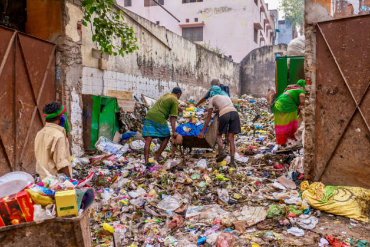
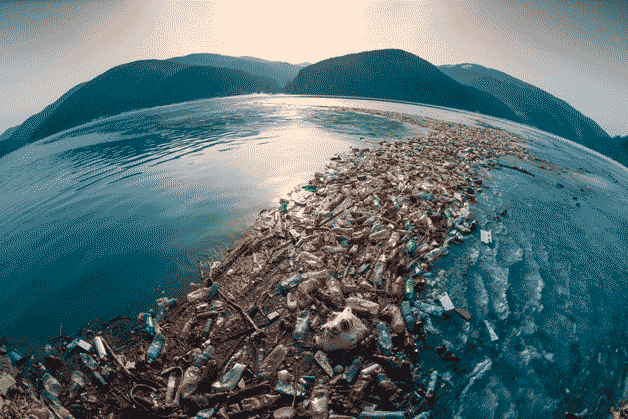
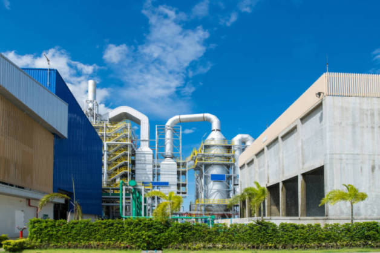

Проблема мусора — глобальная, так как его количество быстро растет на всей планете. Тема “Отходы в экологии” обсуждается на международном уровне: на саммитах G20, встречах различных экологических организаций. Пока эффективные системы сортировки и переработки ввели лишь отдельные страны. Их опыт показывает, что решить проблему отходов возможно только при активном участии представителей разных слоев общества.

В разных городах люди до сих пор выбрасывают мусор на улицы
История проблемы мусора
Проблема отходов не возникала, пока люди жили небольшими группами и кочевали. С появлением постоянных поселений количество мусора значительно увеличилось. Его сваливали недалеко от домов и часто поджигали, чтобы избавиться от неприятного запаха.
Археологи обнаружили свалки возрастом от 4000 до 7000 лет.
Жители городов долго выбрасывали домашний мусор и выливали экскременты прямо из окон на улицу или в расположенные поблизости водоемы.
До XIX столетия отходы в основном состояли из биоразлагаемых материалов. В Средневековье приходилось преимущественно утилизировать труппы животных и тонны фекалий, которые скапливались на улицах. По мере того, как росло промышленное производство, увеличивалось потребление сырья и становилось все больше неразлагаемого мусора. Объем отходов резко вырос, когда появились дешевые изделия одноразового использования.
Влияние мусора на экологию
Виды отходов
Отходы бывают жидкими или твердыми. По происхождению их делят на 3 большие группы:
- Домашние, или хозяйственно-бытовые: садово-огородные, стройматериалы, стекло, макулатура, упаковка, электролом, текстиль, бытовая химия, крупногабаритный мусор, обработанная и необработанная древесина, остаточные отходы (те, которые нельзя отнести к определенному виду).
- Домашние, или хозяйственно-бытовые: садово-огородные, стройматериалы, стекло, макулатура, упаковка, электролом, текстиль, бытовая химия, крупногабаритный мусор, обработанная и необработанная древесина, остаточные отходы (те, которые нельзя отнести к определенному виду).
- Сельскохозяйственные: древесные, растительные, животного происхождения.
Минприроды России выделяет 5 классов опасности отходов в зависимости от степени воздействия на окружающую среду. К первому относятся крайне опасные, которые вызывают необратимые изменения, а к пятому — почти неопасные. В классы 1, 2, 3, соответственно, входят высокоопасные, умеренно опасные и малоопасные.
Сроки разложения
Под действием микроорганизмов разлагаются (гниют) только органические отходы: остатки пищи, растения, фекальные массы и т. д. Стекло, пластик, металл со временем распадаются под воздействием воды, ветра, солнца. Существуют биоразлагаемые полимеры, изготовленные из растительного сырья или нефтепродуктов. К ним относятся, например, полилактиды, полиамиды, полиэстеры, полимочевины. На скорость разложения/распада в природе влияют разные факторы: состав, размер, температура окружающей среды.
Вид отходов и срок разложения или распада
Кожура плодов 2-5 недель
Огрызок до 1 месяца
Полиэтиленовые пакеты 10-20 лет
Газеты 1-3 года
Пластиковые бутылки 100-1000 лет
Сигареты 1-5 лет
Стеклянные бутылки 4000 лет
Зажигалки 100 лет
Полимерная пленка 30-40 лет
Консервные банки 10-50 лет
Проблемы, связанные с отходами
Несмотря на меры, принимаемые отдельными странами, количество мусора на планете увеличивается с каждым годом. Все больше его оказывается в водоемах. Вследствие неправильной утилизации обостряется проблема загрязнения окружающей среды вредными веществами.
Глобальные проблемы
Избежать появления отходов невозможно. Среди основных причин их образования в разных сферах производства и сбыта:
- перепроизводство
- ошибки при изготовлении
- нарушение условий хранения
- повреждение во время транспортировки
- истечение срока годности
- совершение потребителями ненужных покупок

Мусорный остров в океане
Большую проблему представляют собой остатки пластмассовых изделий.
Согласно сообщению в научном журнале Science за 2015 год, в одном только 2010 году в океанах оказалось около 8 млн. т такого мусора.
Он распадается до микрочастиц размером меньше 5 мм и попадает к нам нас стол в виде рыбы и морепродуктов.
В тех местах, где океанские течения создают круговороты, частицы пластика и других отходов соединяются, образуя целые острова. Подобный феномен в Тихом океане, впервые описанный учеными в 1997 году, получил название Great Pacific Garbage Patch (рус. Большое тихоокеанское мусорное пятно).
Пути решения проблем
В развитых странах популярны такие способы борьбы с бытовым и промышленным мусором, как:
- сортировка
- вторичная переработка
- сжигание с целью получения энергии
- компостирование органических отходов
Организация раздельного сбора твердых бытовых отходов в современных городах — важный шаг на пути к их эффективной переработке. Для создания новых продуктов исходное сырье должно быть чистым. Например, пластик, бумага или алюминий, брошенные в контейнер с остаточными отходами, при прессовании в бункере мусоровоза сильно пачкаются, контактируя с остатками еды, грязными мешками для пылесосов или подгузниками. Битое стекло разрушает другие материалы, что усложняет их переработку.
При вторичной переработке отходов первичный продукт разрушается (преимущественно путем расплавления) и используется для создания вторичного. Чаще всего ей подвергаются консервные банки, пластиковые и стеклянные бутылки, упаковки для продуктов питания. Благодаря повторному использованию материалов сохраняются природные ресурсы.

Мусоросжигательный завод